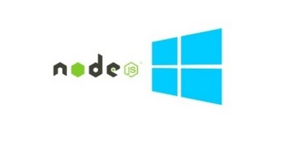
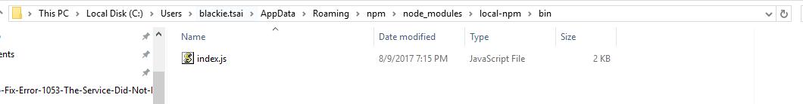
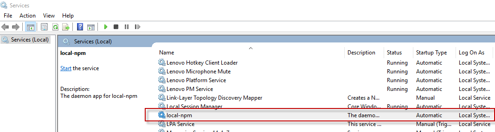
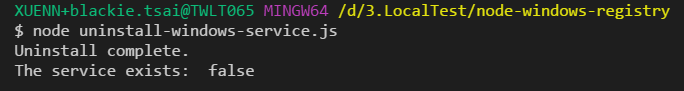

介紹如何透過 node-windows 幫我們建立 node.js 的 daemon 程式在 winodws 環境中背景執行。

今天我們將介紹如何透過node-windows 來幫我們建立由 node.js 所開發的 Winodws Service。
About daemon
對於 daemon 的定義可以參考Wiki)
In multitasking computer operating systems, a daemon is a computer program that runs as a background process, rather than being under the direct control of an interactive user.
簡單來講有時候我們會再Server上撰寫一些簡單的小程式，. 可能是會定時執行某些任務或是長期運行，但其實不需要任何的畫面顯示，這時候我們就可以用 daemon 的方式來運行這些程式。
而在 Windows 的環境我們通常是開發一個 Windows Service

如果是用 C# 撰寫的部分可以參考[C#] 撰寫一個簡單的Windows Service。
接下來則是要介紹如何將寫好的 node.js 程式註冊成 windows service 執行。
node-winows
node-winwos 是一個協助我們建立 node.js 在 windows 運行 daemon 套件。
如果是其他作業系統也想透過 node.js 運行 daemon 模式可以參考 node-mac and node-linux 。
使用上只要安裝後提供一個註冊檔作為服務註冊執行的程式即可。
Hands on Lab
準備好已開發的 node.js 程式，這邊我已先前所介紹的 local-npm 為例，展示如何註冊服務，如果對該工具不熟的朋友可以參考local-npm: Offline npm registry，而該產品的執行位置(index.js)如下：

新增一個資料夾並透過 npm 下載 node-windows:
mkdir node-windows-registry & cd node-windows npm init -y npm install node-windows --save新增 install-windows-service.js 檔案並輸入以下內容：
1
2
3
4
5
6
7
8
9
10
11
12
13
14
15
16
17var Service = require('node-windows').Service;
// Create a new service object
var svc = new Service({
name:'local-npm',
description: 'The daemon app for local-npm',
script: 'C:\\Users\\blackie.tsai\\AppData\\Roaming\\npm\\node_modules\\local-npm\\bin\\helloworld.js'
});
// Listen for the "install" event, which indicates the
// process is available as a service.
svc.on('install',function(){
console.log('Install complete.');
svc.start();
});
svc.install();在該目錄下執行以下指令進行服務註冊：
node install-windows-service.js
完成後到 service 下可以看到該服務被註冊但未運行(需手動執行)

Uninstall Windows Service
如果需要移除該服務註冊可以新增一隻 uninstall-windows-service.js 並貼上以下內容：
1 | var Service = require('node-windows').Service; |
並執行以下指令即可移除：
node uninstall-windows-service.js
